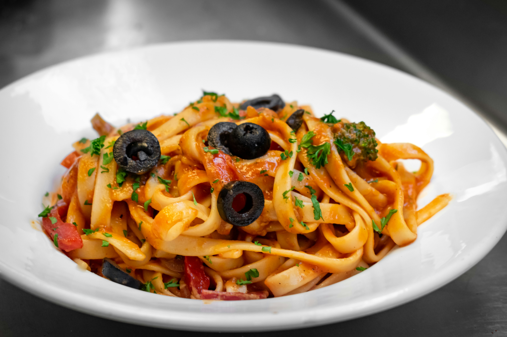

Veg Pasta

Description
This veg pasta is a quick and flavourful meal made by tossing boiled pasta with sautéed fresh vegetables and a
tangy tomato sauce. It’s filling, colourful, and perfect for lunch, dinner, or a healthy evening meal.
Ingredients
- Pasta (Penne or Fusilli)
- Mixed vegetables
- Tomato pasta sauce
- Oil
Steps
- Cook pasta in salted boiling water as per packet instructions. Drain and set aside.
- In a pan, heat oil and sauté chopped onions, capsicum, and any other veggies of choice.
- Pour in tomato pasta sauce, add boiled pasta, mix well, and cook for 2-3 minutes.
- Garnish with oregano, chilli flakes, and grated cheese if desired.
Home